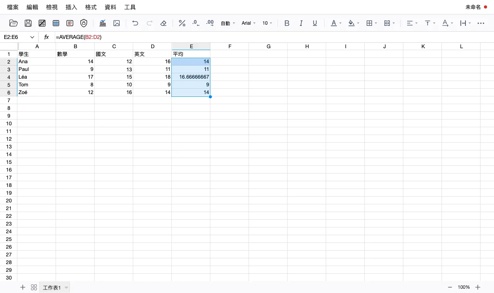

數值格式
格式改變數字的顯示，不改變其值：計算保留所有小數位。
選擇格式
格式 › 數位，或按鈕列的 自動 清單。
| 格式 | 範例 |
|---|---|
| 自動 | 1200.09 |
| 純文字 | 1200.09，左對齊；輸入保持為文字 |
| 數位 | 1200.09 |
| 百分比 | 120009.00%；0.25 變為 25.00% |
| 科學計數 | 1.20E+03 |
| 會計 | NT$(1,200.09) |
| 貨幣 | NT$1,200.09 |
| 日期、時間、日期時間 | 用於日期：2017-11-29、3:00 PM、15:00… |
貨幣符號由介面語言決定。
| 按鈕 | 效果 |
|---|---|
| 百分比 | |
| 減少一位小數 | |
| 增加一位小數 |
這些按鈕也適用於清單中的數字。要對值本身取整，請使用 ROUND。
自訂格式
格式 › 數位 › 自訂數字格式…：選擇建議的格式，或編寫代碼。預覽顯示結果；格式指南 說明各符號；套用 應用到選區。

| 符號 | 作用 | 代碼 | 1234.5 顯示為 |
|---|---|---|---|
0 | 一位數字，包括零 | 0.00 | 1234.50 |
# | 需要時才顯示的數字 | #.## | 1234.5 |
, | 千位分組 | #,##0 | 1,235 |
% | 百分比 | 0% | 123450% |
"文字" | 文字、單位 | 0.0 "m" | 1234.5 m |
E+00 | 科學記數法 | 0.00E+00 | 1.23E+03 |
; | 正數、負數、零、文字的格式 | 0;-0;"無" | 1235 |
[Red] | 色彩 | 0;[Red]-0 | 負數為紅色 |
代碼使用該語言的分隔符輸入；視窗顯示儲存時的形式（#,##0.00），與 Excel 相同。
日期與時間
| 代碼 | 2026 年 8 月 29 日 14:30 |
|---|---|
dd/MM/yyyy | 29/08/2026 |
d mmm yyyy | 29 Aug 2026 |
dddd d mmmm yyyy | Saturday 29 August 2026 |
hh:mm | 14:30 |
dd/MM/yyyy hh:mm | 29/08/2026 14:30 |
月份和星期的名稱以英文顯示。
單位
在 單位 下有 0.00 "V"、0.00 "Ω"、0.00 "mm" 等格式：儲存格仍是數字，可以參與計算。